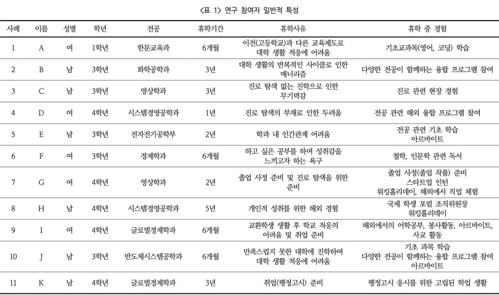

저자 백정은
발행일 2022년 5월 발행
대학생의 휴학 중 경험에 대한 사례연구
본 연구는 ‘휴학’이라는 새로운 환경에서 대학생들이 경험한 다양한 활동을 살펴보고, 학생발달 관점에서 그러한 경험이 학생들의 성장과 발달에 어떠한 영향을 미치는지를 탐색하고자 하였다. 서울 소재 4년제 A대학에 재학 중인 휴학 경험이 있는 학생 11명을 대상으로 면담을 수행하였다. 면담 내용을 모두 전사한 후, 주제 분석 방법을 적용하여 분석하였다. 연구 결과, 대학생들은 휴학 중 지적, 사회적, 자기 성찰적 경험을 한다. 구체적으로 지적 경험은 ‘자기주도 학습과 몰입’, ‘현장 체험과 진로 성숙’, ‘개별화 학습 경험과 긍정적 학업정서’ 등이었다.
지적 경험은 학생들의 진로 가치관을 확립하고 진로성숙도에 영향을 미치는 것으로 나타났다. 사회적 경험은 ‘다양성 이해와 개방적 태도를 길렀던 인적 교류’, ‘삶에 대한 가치관과 진로를 바꿔준 문화접변 경험’, 현장 전문가 교류와 진로 탐색’, ‘큰 조직 리더 경험과 자기효능감’이다. 이러한 경험을 통해 학생들은 사고를 확장하고 타인에 대한 이해가 높아지는 등 가치관이 재정립된 것을 확인할 수 있었다. 자기 성찰적 경험은 ‘무기력을 떨치고 도전해 본 경험과 작은 성취’, ‘도전적 해외 경험과 성숙한 자아개념’, ‘나를 되돌아본 시간과 내면적 성숙’ 등이 있다. 자기 성찰적 경험은 학생들 자신에 대한 성찰과 이해하는 과정을 통해 내적 성숙을 촉진하고 있었다.